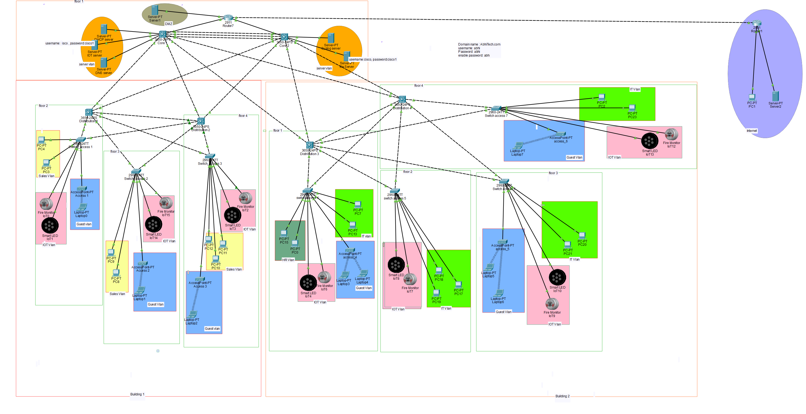
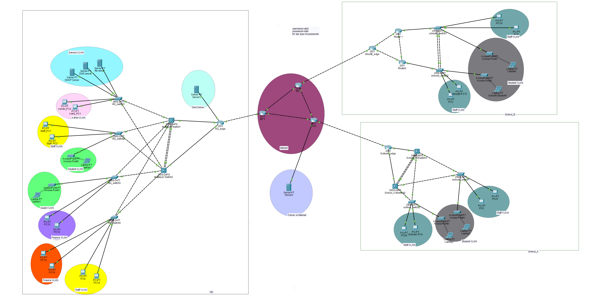

Networking · Server Admin · IT Support - Darwin, NT
CCNA certified.
Lab tested.
Ready for my first IT role.
Bachelor of IT graduate from Charles Darwin University and Cisco CCNA certified. My hands-on experience comes from labs and study projects, where I've designed switched and routed networks and built a hybrid server lab with virtual machines on-premises and in Azure, secured at both the network and server level. I'm looking for an internship or junior role in IT support, networking or systems administration, where I can learn quickly from an experienced team.
Select a node to jump to that skill
01 - Work
What I've built.

Enterprise LAN
AbhiTech Solutions - Enterprise LAN build
A three-tier enterprise LAN lab built in Cisco Packet Tracer, modelling a company across two buildings, designed so a single failed link or device doesn't take the business offline.
- Core / Distribution / Access hierarchy with HSRP gateway redundancy
- Layer 2 hardening: port security, DHCP snooping and Dynamic ARP Inspection
- Static NAT and PAT, with a fully isolated guest VLAN

WAN & VPN
Multi-school WAN build
A Packet Tracer lab connecting several school campuses to a central office over encrypted site-to-site tunnels, so every campus can reach central services securely.
- GRE over IPsec tunnels between every campus and the central office
- OSPF dynamic routing running across the GRE tunnels
- Remote device management restricted to admins at headquarters
Systems & Access Control
Inventory Management System
A multi-organization inventory system for tracking equipment, stock and who has borrowed what, with role-based permissions so each user can only see and change what their role allows. Built in Python and Django with a relational database.
02 - Skills
What I work with.
All built, configured and tested in hands-on labs and study projects.
net0/1 - primary focus
Networking
- TCP/IP, subnetting & VLANs
- Routing & switching, OSPF
- HSRP redundancy & failover
- Port security, DHCP snooping, DAI
- Site-to-site VPN (GRE over IPsec)
- NAT / PAT & network troubleshooting
srv0/1
Server & Systems Admin
- Windows Server on virtual machines
- DHCP & DNS services
- Group Policy (on-premises lab)
- Hybrid setup: on-premises & Azure VMs
- User accounts & access permissions
- Role-based access control
sup0/1
IT Support
- Windows OS installation & setup
- Windows & macOS troubleshooting
- Microsoft Office
- Hardware setup & basic troubleshooting
- Troubleshooting network & internet problems
- Explaining tech issues in simple terms
03 - Approach
How networks and servers fit together.
layer 1-3
A server is only as good as its network
- Users reach servers through DNS, DHCP, VLANs and routing - if any one fails, the server looks "down" even when it's running.
- That's why I troubleshoot from the network up: cable, IP, gateway, DNS, then the server.
- Redundancy like HSRP keeps services available when a link or switch fails.
network & server
Protecting the network and the server
- Separate guest devices from servers with VLANs.
- Harden switch ports with port security, DHCP snooping and DAI.
- Encrypt site-to-site traffic and limit remote management to admins.
- Give user accounts only the permissions they need.
people first
Support is where it all comes together
- My labs taught me to work out whether a problem is the device, the network or the server.
- Understanding the whole path helps find the cause faster and explain it simply.
- Good IT should be reliable and easy for people to use.
04 - Background
Study & certification.
I've completed a Bachelor of Information Technology at Charles Darwin University and hold the Cisco CCNA. I'm most interested in network and systems administration and IT support. My experience so far is hands-on lab work, and I pick up new tools and systems quickly. I like work where the result can be tested: the ping returns, the VLAN passes traffic, the failover actually fails over, and the user can get back to work.
Bachelor of Information Technology
Charles Darwin University - Darwin, NT
Completed 2026
Advanced Diploma of Information Technology
Southern Academy of Business and Technology - Sydney, NSW
Completed 2024
CCNA 200-301
Verify credential05 - Contact
Let's talk.
Looking for an internship or junior role in IT support, service desk, networking or systems administration in Darwin and across the NT. I learn fast and I'm ready to start.
Brinkin, NT